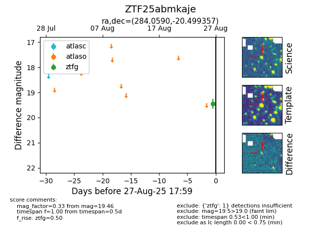

FINK: ZTF25abmkaje
Lasair: ZTF25abmkaje
ALeRCE: ZTF25abmkaje
ZTF25abmkaje (ztf,fink)
equatorial (ra, dec) = (284.0590,-20.49936)
galactic (l, b) = (15.0176,-10.20294)

last atlaso=19.43, ztfg=19.46
1 atlaso, 1 ztfg detections